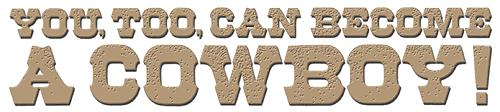
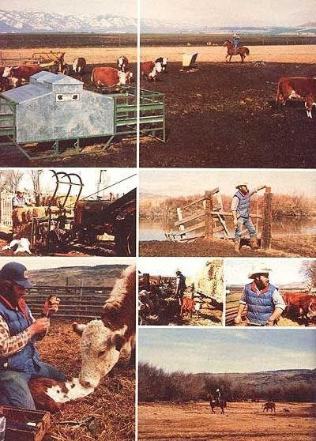

"A lot of city children dream about becoming cowboys and cowgirls when they grow up," say Ron and Linda Martin (both formerly of Los Angeles), "and we used to dream those same dreams too. The only difference between us and most of the rest of those urban youngsters, in fact . . . is that we made our dreams come true!"
Have you ever wanted to gallop across the range with the reins of a horse in one hand and a twirling lariat in the other? Better yet, have you secretly daydreamed of getting paid for "rounding up the dogies", "riding fence", and doing other such chores out in the wide open spaces?
Well, if you have, then you're probably right about where our family was just a few short years ago. My husband Ron and I were both born, raised, and educated in Los Angeles . . . but neither one of us wanted to live in that or any other city.
Instead, we dreamed of buying a small country ranch somewhere, going into the cattle business full time, and bringing up our own family far away from urban crime, pollution, and noise.
And so, just as many other "back-to-the-landers" have done in recent years, we put some money down on a small working ranch. And we then tried to run the place while one or both of us commuted to city jobs to earn enough to keep up the payments on the ranch. The idea didn't work out very well for us for at least three reasons:
One, Ron didn't really want to work at a city job at all (even to pay for our new place in the country). He wanted to work full time at ranching.
Two, I didn't want to work full time (especially in the city, where the best paying jobs were) either. I wanted to stay out in the country and take care of our children and our home.
And, three, experience soon taught us that we-city people that we were-just didn't have the skills we needed to operate an efficient and self-supporting cattle spread. Furthermore, we figured it would take several years for us to teach ourselves those skills. "What we really need," we agreed, "is for someone else to pay us to learn all the things we need to know."
And, as unlikely as it may sound, Ron (who's now 32) and 1 really are being paid to learn the ranching business. My husband, you see, is now a paid cowhand on a several-thousand-acre registered Hereford ranch in northeastern Oregon. And for his services we receive a salary of $500 a month, a free three-bedroom house on the spread, and all the garden vegetables, meat, milk, and eggs we can use.
I should point out, too, that Ron is a long way yet from top wages for the work that he does. An experienced hand (say, a herdsman with a college degree) can earn $800 to $1,000 a month, live rent-free in a better house than the one we have, etc., out here in ranch country. Naturally, we hope to work our way up the pay scale as time goes on, but for now-considering how much we still have to learn-we're happy with our lot in life.
Although Ron knew going in that he wanted to be a ranch hand, it wasn't until he'd started working at his new job that he realized how strongly the Age of Specialization-more or less-has now hit cow country too. A typical ranch, for instance, may be staffed by a herdsman, top hand, one or more hired hands, several cowboys, a ranch hand, etc.
And-even though each man (or, in some cases, woman) has his or her own defined set of responsibilities-any one of them may be called upon at any time to be a horseman, roper, nutritionist, vet, cattle judge and/or showman, heavy equipment operator, agriculturalist, mechanic, fence builder and/or mender, barn or house builder, farrier, tack repairman, truck driver, tractor operator, horse trainer, or Lord knows what. Obviously, a knowledge of horses, cattle, and other animals is helpful . . . as is a familiarity with arc welding, gas heat, electrical wiring, internal combustion engines, hydraulic systems, and so on.
Little wonder, then, that during his first four months on the ranch, Ron [1] helped deliver calves, often with a pulley, [2] administered medications and shots, clamped on ear tags, and applied tattoos, [3] stripped out range cows that were giving too much milk for their calves, [4] rode herd on the cattle and looked each animal over daily, [5] helped castrate bulls and sort, weigh, grade, and de-lice the herd during fall roundup, [6] washed, clipped, and groomed animals for livestock shows, and [7] fed and fattened penned cattle for shows and sales.
In addition to all that, my husband also [8] used his carpentry skills to build and mend several things, [9] cut timber for both fencing and winter heat, [10] impressed both himself and the boss by trimming a horse's hooves and putting a complete set of new shoes on the animal, [11] welded up several sets of winter horseshoes, [12] operated planting, cutting, baling, and haystacking equipment, [13] repaired and made his own tack when necessary, and [14] installed electrical wiring and plumbing and thawed out frozen pipes.
There was much more, of course, but that'll give you an idea of what a modern-day cowboy can be called upon to do. Ron finds it all very interesting and exciting because, as he says, "There's always something new happening."
And when Ron says "always", he means more than you might have thought. A typical day out here on the ranch begins at 6:00 a.m. and-except for an hour out for breakfast and an hour out for lunch-doesn't let up until sunset. And that's six days a week.
On the other hand, my husband is no longer forced to travel on freeways to get to work, doesn't punch a time clock, and doesn't have to put up with the pressures of city life or a city job. He gets up in the morning, decides which chores or tasks need his attention the most, and budgets his time accordingly. Sure his hours are long ones . . . but it's just grand to hear him go out the door saying, "I never thought anyone would ever pay me to ride a horse."
Obviously, if you're interested in trying to fill my husband's boots, you will have to know how to ride a horse . . . and ride well. As an "old hand" who'd never owned (and hardly ridden) a horse until two years ago, though, Ron offers this advice to other aspiring cowboys:
[1] BUY YOUR OWN HORSE AND TACK. Although a good many ranches will furnish mounts and riding gear to their men, you're far better off if you have your own. First, it'll make you appear to be far more professional (and you will be) if you have your own horse and tack. And, second, you'll be a lot safer on the job if you thoroughly know and trust your mount and gear, and your horse knows and trusts you. It takes time and training to build that kind of relationship.
Remember that ranch work can call on you to be in the saddle at all hours of the day or night and under all sorts of conditions. So buy the best tack and the best horse you can afford and then (without abusing the beast) show neither yourself nor the animal any mercy.
Start slowly until both you and your mount are in condition . . . then learn to ride both straight up and straight down mountains. Stay off trails. Cross rivers and jump logs. Run full speed and at every different gait you can think of. Always challenge both yourself and your horse to do just a little hit more than you think you can do.
[2] YOU DON'T HAVE TO PAY FOR LESSONS. You'll fall off (make sure you have insurance!), of course, if you try to teach yourself to ride . . . but then, people fall off horses in the middle of formal lessons too.
Any city-if you're still living in town, as we were when we were still dreaming of ranch life-which is zoned for horses is inhabited by a certain number of experienced riders. And, if you ask, you'll find that most of them will be glad to show you how to put a saddle and bridle on a horse and how to adjust the tack correctly. Those same riders also can show you how to sit a horse properly and how to give it its cues. From then on, the rest is pretty much up to you. Just remember that the object of ranch riding is to get the job done, not necessarily in the fanciest manner. Be patient. Learning to ride does take a certain amount of time.
Once you've learned to ride long and hard, you'll probably want to develop special skills in roping and/or cutting (using a horse to separate one or more cattle from a herd).
Many excellent schools and individuals can train you and your horse to cut cattle and handle a rope. You'll find a number of them mentioned and advertised in The Western Horseman, P.O. Box 7980, Colorado Springs, Colo. 80933 . . . Horse and Horseman, 34249 Camino Capistrano, Capistrano Beach, Calif. 92624 . . . and Horseman, 5314 Bingle Rd., Houston, Tex. 77018. These magazines also feature plenty of "how to" advice for both the beginning and seasoned working rider.
And don't overlook the help that's probably available right in your own back yard either. Every "horse" town we've ever lived in has had at least one roping arena and/or several riding schools. Ask around at the local tack shops. Someone there will be able to tell you where such establishments are located. A roping arena-where each rider pays a small fee for the use of some steers and the ring for a specified amount of time-is probably your best bet.
Ron was lucky when he started working out in an arena before we left town. There were always a few "old-timers" around who were more than eager to show the "greenhorn" how to hold a rope, throw a loop, and work a horse and lariat simultaneously. Whether or not you have the same kind of luck (and I'm sure you will), it goes without saying that you should know enough about ropes and roping before entering one of these arenas . . . to understand what your would-be instructors are talking about when they try to help you.
A little book learning can be a big help when you're just starting out with a lasso. Try Cowboy Roping and Rope Tricks by Chester Byers (originally published in 1928 and currently available as a Dover paperback for $1.50). Then when you're ready to buy your first lariat, talk to someone in a tack shop who really knows what ropes are al) about. Have him or her explain the differences in lassos . . . and don't be afraid to start with a "beginner's" rope and work your way up. After that, you should practice with the lariat "on the ground" (rather than in the saddle) until you can handle it well enough to rope buckets, children, dogs, goats, etc., before you start working out on horseback in an arena.
And a final word on the subject: On-the-job-training (how do you think the old-time cowpokes learned their skills?) can still be the best kind of all. Ron had just started working out in a roping arena before we moved to the country . . . and most of the lariat experience he has he got right on the job. He still has a ways to go but with each cow he catches he gains more confidence . . . and every one he misses just makes him that much more determined to do better.
Next to [1] knowing how to ride, and [2] learning cutting and roping, you'll have to [3] "know your cows" to be a ranch hand. Some cattlemen, of course, seem to naturally absorb this knowledge just by growing up around livestock. In general, however, simply owning and feeding cattle is no longer enough of an education in this end of the business (even lifelong farmers and ranchers now go to college to learn to be better herdsmen).
"Well," Ron figured, "if they can train herdsmen in college, there must be text books on the subject. And if there are textbooks available, I should be able to buy a few of them and read 'em myself. And then after that-if I have some livestock to practice on and someone to consult when I have a question-it seems reasonable to me that I ought to be able to educate myself into about as good a herdsman as most of the ones I've seen come out of college."
And that's the way Ron got his herdsman's education. As he went along he developed a preference for Dr. M.E. Ensminger's books on horses and other livestock (Mother's Bookshelf stocks these and many other books on the subjects), but you can make your own choice in the matter. One good way to survey the field is to walk into an agricultural college's bookstore at the beginning of a term when the shelves are fully loaded. It'll give you a good idea of the handbooks available . . . and you may even find some used books that you can pick up for half price.
Of course you shouldn't expect to learn as sensitive a subject as herdsmanship from books alone. You've got to put your animal husbandry knowledge to practice as you absorb it if you want it to stick. Working with ranch horses and cattle, naturally, is a good way to do this. But if you haven't landed that job as a cowboy yet, there are other ways.
If you have or can get a place to keep one, buy a registered cow or a steer of your own and show it or let the children show it in 4-H. And if-like us-you can't afford a cow, show goats! There's always a way if you're determined enough to find it.
My husband, obviously, was determined that he'd teach himself to be a herdsman. So he studied his books, showed our goats, learned to give an animal shots and boluses and taught himself how to drench a sick cow or goat (this has all been covered in past issues of MOTHER). And he read and studied and practiced until he knew animal anatomy inside out. Result: During his first week on the job, when he was told to assist a difficult calf birthing by fastening the chains of the pullet above the baby's pasterns (the part of the foot between the fetlock and the hoof) . . . he didn't have to be told what a pastern was. He already knew.
All right. You now know how to ride, you're learning to rope and cut, and you're working with your textbooks and animals. There's only one thing left: Before you sell the house and move the family . . . you really need to get "out there" and be a cowboy for a while to make absolutely certain that that's really what you want to do.
Fortunately, it's easy to give your new outdoor way of life a temporary try before you commit yourself to it permanently. Summer ranching jobs are plentiful all over the United States. The pay may not be very good, the housing may he inferior, and one of these short-term positions may not he exactly what you visualized (they tend toward lots of chores and not much cowboying).
A job as a summer ranch hand, however, will give you the one thing that-right now-you need more than anything else: actual work experience out on a ranch with real cattle and real horses and real cowpokes. (And that experience will probably mean even more to you if you've first read The Cowboy, by Ron Tyler, copyright 1975, published by William Morrow & Co., and available from any good bookstore for $16.95. )
There are many ways to find either a short-term summer ranching job or permanent work as a cowhand, and here are three of the best:
[1] Contact an agricultural college and personally talk with its professors. Ranches frequently list summer openings with these colleges . . . and a professor won't pass a job on to a non-student unless he knows that the individual is really serious about working on a ranch. (Ran found his present full-time position through a college contact.)
[2] Advertise in the Western Livestock Journal, Nelson R. Crow Publications, Inc., 4701 Marion St., 4th Floor, Livestock Exchange Building, Denver, Cola. 80216. This weekly newspaper is widely read by ranchers and if your ad is a good one, you'll get response.
[3] Write directly to ranchers. There are thousands of cattle raisers in the U.S. and-at any given time-a substantial percentage of them are looking for good help. It's not hard to contact hundreds of these ranchers at a time with a mass mailing and offer your services.
For example, the monthly publication Polled Hereford World compiles a special "Herd Book Edition" once a year. In 1976, this special issue was 700 pages long and consisted almost entirely of page after page of advertisements placed by ranches all over the United States. Now multiply this by the number of breeds of cattle raised here in the States-Angus, Simmental, Brahman, etc. (each of which has its own publication)-and you'll realize just how easy it is to put your hands on the names and addresses of more ranches than you'll probably care to mail your form letter to. And that's only the registered herds! Tens of thousands of other feedlots and ranches, which raise only crossbreeds, don't even bother to advertise in these magazines. (If you don't know how to go about finding the specialized periodicals mentioned here, your local library can help you.)
And will a random mailing to ranches really pay off? Yep. At least it did for us. Ron and I spent about $100 canvassing a small portion of the market for permanent employment in the summer of 1976. By August, we already had six offers to consider! (This was in addition to the job prospect that Ron had turned up through his college contacts . . . and which he decided to take because the ranch was reliable and had a good reputation.)
What it all boils down to is that if you really do want to work on a ranch-and truly know the meaning of the word "work"-you'll have no trouble finding someone who'll hire you. There's always a crying need for good help out in farming and ranching country.
Why? Because-compared to the city-wages are low, the hours are long, and the work can be both hard and dirty. And with farm prices perpetually down and the cost of everything else constantly spiraling up, it's unlikely those conditions will change any time soon. If you're looking for fat weekly paychecks, sick leave, paid vacations, and medical insurance-in other words-the city is the place to do your looking.
Then again, money alone-even when sweetened with the more conventional fringe benefits of a factory or office job-can only go so far too. Some of us-Ron and me, for instance-are far happier with a smaller pay envelope . . . as long as it comes with the free house, free food, and robust outdoor life that we currently enjoy.
And we're not entirely sure we're alone in our thinking: Somehow we sort of have the suspicion that a great many other "city folks"-if they only knew how-would gladly make the same move from the congestion, crime, and pollution of town to the wide open spaces of ranch country that we've made.
Personally, we know that such a swap can be good for both the people leaving the city . . . and the farmers and ranchers that these enthusiastic "new pioneers" wind up working for. Young folks have been leaving the country for the oversold "bright lights of town" for far too long. It's time that new blood flowed in the opposite direction. And if our experience is any indication, that fresh blood can be highly appreciated.
When Ron applied for the job he now has, he told his new employer straight out that he knew how to ride a horse . . . and that was all. When the boss asked if he could drive a tractor and Ron said "no" . . . well, the foreman just allowed as how someone would have to teach him.
"Why are you willing to train me to do most of the things that I'll be doing?" Ron asked.
"Because, Ron. You're here because you want to be here. And that's what we need."
|
 |
 |
|